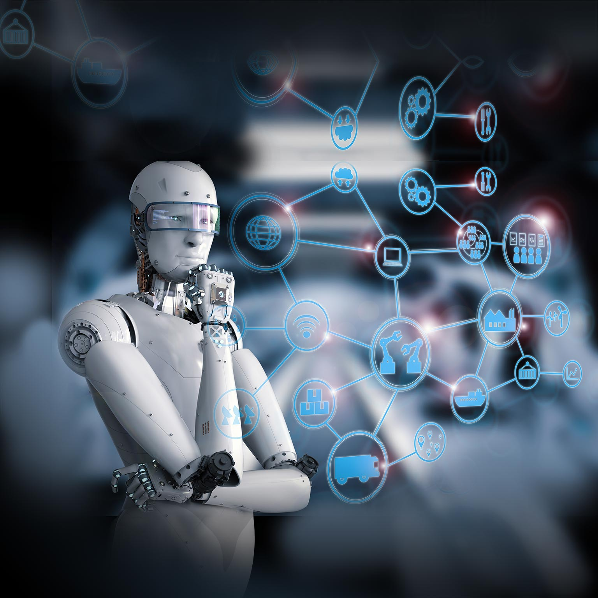

In the first half of the 20th century, science fiction familiarized the world with the concept of artificially intelligent robots. It began with the “heartless” Tin man from the Wizard of Oz and continued with the humanoid robot that impersonated Maria in Metropolis. By the 1950s, we had a generation of scientists, mathematicians, and philosophers with the concept of artificial intelligence (or AI) culturally assimilated in their minds. One such person was Alan Turing, a young British polymath who explored the mathematical possibility of artificial intelligence. Turing suggested that humans use available information as well as reason in order to solve problems and make decisions, so why can’t machines do the same thing? This was the logical framework of his 1950 paper, Computing Machinery and Intelligence in which he discussed how to build intelligent machines and how to test their intelligence.
Unfortunately, talk is cheap. What stopped Turing from getting to work right then and there? First, computers needed to fundamentally change. Before 1949 computers lacked a key prerequisite for intelligence: they couldn’t store commands, only execute them. In other words, computers could be told what to do but couldn’t remember what they did. Second, computing was extremely expensive. In the early 1950s, the cost of leasing a computer ran up to $200,000 a month. Only prestigious universities and big technology companies could afford to dillydally in these uncharted waters. A proof of concept as well as advocacy from high profile people were needed to persuade funding sources that machine intelligence was worth pursuing.
We haven’t gotten any smarter about how we are coding artificial intelligence, so what changed? It turns out, the fundamental limit of computer storage that was holding us back 30 years ago was no longer a problem.Moore’s Law , which estimates that the memory and speed of computers doubles every year, had finally caught up and in many cases, surpassed our needs. This is precisely how Deep Blue was able to defeat Gary Kasparov in 1997, and how Google’s Alpha Go was able to defeat Chinese Go champion, Ke Jie, only a few months ago. It offers a bit of an explanation to the roller coaster of AI research; we saturate the capabilities of AI to the level of our current computational power (computer storage and processing speed), and then wait for Moore’s Law to catch up again.
Next